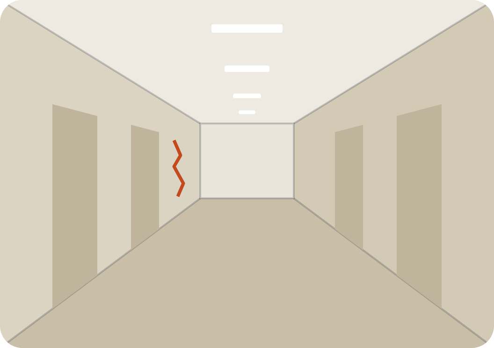
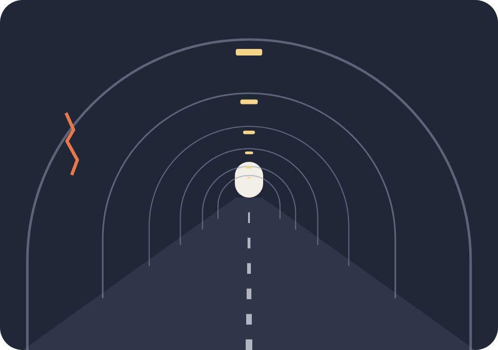
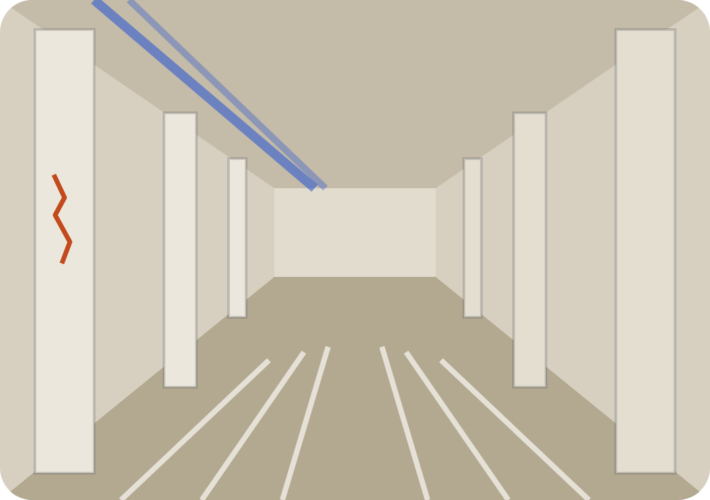
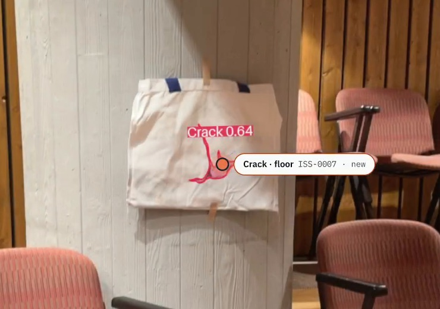

The 3D
damage map
Scan a site once. Flag what has changed.
Track 2 · Resilient & Safe City
Leukerbad Robotics Carnival Hack 2026
Our scan of the conference hall, Leukerbad · 15 Nov 2026
The problem
Today, a crack
is just a photo.
- ?Where exactly?
- ?Is it new?
- ?Is it growing?
No GPS inside buildings, tunnels or car parks.

IMG_4821.JPGwhere?

IMG_4907.JPGwhere?

IMG_5013.JPGwhere?
No GPS
No GPS
No GPS
Our idea
Scan once. Every photo
finds its place.
- 01
Scan
A photoreal 3D twin of the site
- 02
Locate
Any camera, placed without GPS
- 03
Flag
New, worsening or repaired
Flag what has changed
Same spot, new photo.
The change gets flagged.
Real record · ISS-0007

Crack · floor
New
0.55 m15 Nov 2026, 20:29
from a phone
Next photo
of this spot
matched within 15 cm
- Worsening20 % longer, at least +2 cm
- Stableno growth
- Repairedcrack gone · a person confirms
- Time slider: the site on any date
- Before / after swipe
- PDF report · hash-chained records
Built this weekend
It runs end to end,
on real data.
3MGaussians in the 3D twinconference hall · 15 Nov
6mmmedian positioning errorheld-out views · 0 wrong
10ssweep + photo per recordiPhone app · no GPS
51automated tests passingbackend · VPS · maps
iPhone appsweep + photo
Visual positioningour own · no GPS
SAM 3finds the crack
3D pin + sizelength in metres
Issue log + PDFhash-chained
What's next
From one hall to every site.
From phones to robots.
More damage
Cracks todayCorrosionLeaksSpalling
More sites
Buildings todayTunnelsCar parksBridges
More robots
DronesHumanoidsRobot dogsWheeled robots
More uses of the twin
Inspection todayNavigationTraining policies
Robot-ready map · 39.8 m² drivable
The team
Six people, six nationalities,
one map.
Ishan
TUHH Hamburg
Pia
ETH Zürich
Fabian
TU Bergakademie Freiberg
Han
ETH Zürich
Marc
ETH Zürich
Sep
USI Lugano
One map. Every damage record
in its exact place.
0:00 / 4:00
→ next ← back F fullscreen S notes T timer